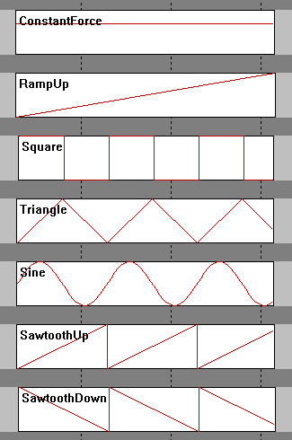
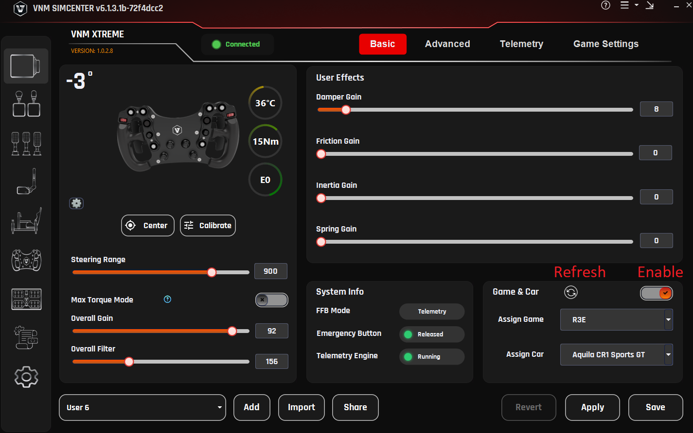
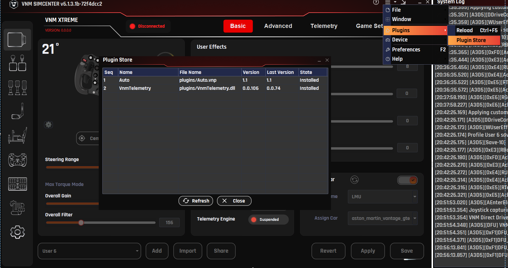
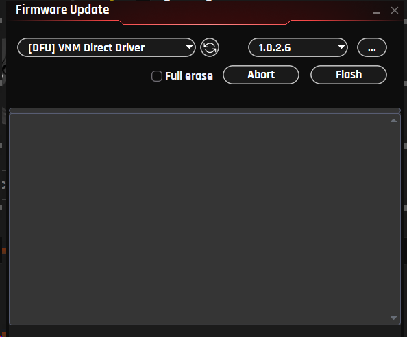
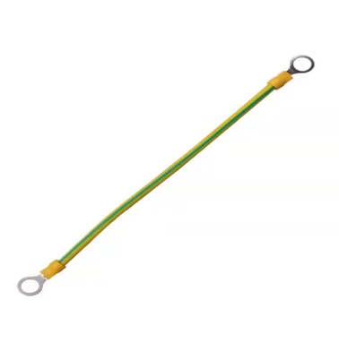
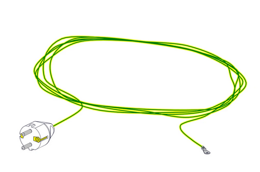
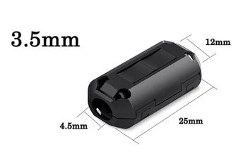
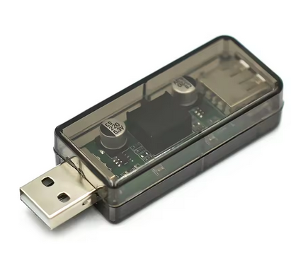

VNM DIRECT DRIVE CONFIGURATION MANUAL
Revision 0.6
I. Overview
1. Introduction
This manual provides instructions for installing, configuring, and operating VNM Sim Racing hardware using the VNM SimCenter configuration software.
The VNM ecosystem includes a range of professional sim racing devices designed for high-precision driving simulation and designed for high-precision driving simulation. These devices can be configured and managed through a unified software platform.
Supported device categories include:
-
Direct Drive Wheelbases
-
Steering Wheels
-
Pedal Sets
-
Shifters
-
Handbrakes
-
Button Boxes
-
Motion Systems
Device configuration and system tuning are performed through VNM SimCenter, which provides a centralized interface for device management, system configuration, and game integration.
This manual explains how to:
-
Install and set up VNM SimCenter
-
Connect and initialize supported hardware devices
-
Configure device parameters
-
Configure supported racing games.
-
Tune Force Feedback (FFB) behavior
-
Diagnose and resolve common issues
This documentation is intended for both new users and experienced sim racers who want to optimize their hardware configuration.
2. VNM SimCenter Overview
VNM SimCenter is the configuration software used to manage and control all supported VNM sim racing hardware.
The software provides a unified interface for configuring and managing multiple VNM devices.
Key features of VNM SimCenter include:
-
Automatic device detection and management
-
Force Feedback configuration for Direct Drive wheelbases
-
Pedal calibration and adjustment
-
Button mapping and input configuration
-
Game integration and telemetry support
-
Firmware updates for supported devices
-
System diagnostics and logging
Through VNM SimCenter, users can adjust device behavior, create configuration profiles, and optimize settings for different sim racing games.
3. Software Interface
The VNM SimCenter interface is organized into several sections designed to simplify device configuration and system monitoring.
The main interface includes:
-
Device configuration panel
-
Device selection sidebar
-
System information display
-
Profile management tools
Each connected device can be configured individually through its corresponding configuration page.
3.1. Configuration Window
The Configuration Window is the primary interface used to configure connected VNM devices.
A device list is displayed on the left sidebar, showing all supported device categories in the VNM ecosystem.
Device categories include:
-
Wheelbase
-
Steering Wheel
-
Pedals
-
Shifter
-
Handbrake
-
Button Box
-
Motion System
Selecting a device from the sidebar opens its configuration page, where users can adjust parameters specific to that device.
Detailed configuration instructions for each device are provided in the relevant sections of this manual.
3.2. System Log Window
The System Log Window displays real-time system messages and device event logs generated by VNM SimCenter.
This window can be opened using the keyboard shortcut:
Ctrl + F9
The log window provides useful information for monitoring system activity, including:
-
Device connection and initialization status
-
Firmware and hardware information
-
Communication events between devices and the software
-
Error messages and diagnostic information
The System Log Window is primarily used for system monitoring and troubleshooting.
4. System Requirements
Operating System
| Requirement | Specification |
|---|---|
OS |
Windows 10 / Windows 11 |
Architecture |
64-bit |
Hardware Requirements
| Component | Minimum Requirement |
|---|---|
CPU |
Intel / AMD Dual-Core Processor |
RAM |
4 GB |
USB |
USB 2.0 or higher |
These requirements apply only to the VNM SimCenter software.
Individual hardware games may have additional requirements.
Supported Devices
The following VNM devices are supported by VNM SimCenter:
-
VNM Direct Drive Wheelbases
-
VNM Pedals
-
VNM Steering Wheels
-
VNM Shifters
-
VNM Handbrakes
-
VNM Button Boxes
-
VNM Motion Systems
Additional devices may be supported in future software updates.
5. Software Installation
Download the latest version of VNM SimCenter from the official website:
Installation Steps
Step 1 — Download the software
Download the latest VNM SimCenter installation package from the official VNM website.
Step 2 — Extract the software
Extract the downloaded package to a folder on a data drive, for example:
D:\VNM SimCenter\
Important
Do not extract or copy the software into Windows system directories such as:
C:\Windows\
C:\Program Files\
Placing the software in system folders may cause permission issues and prevent the application from running correctly.
It is recommended to install VNM SimCenter in a dedicated folder on a data drive.
Installation Note
Always install the latest version of VNM SimCenter to ensure compatibility with:
-
The latest firmware versions
-
Supported sim racing games
-
Telemetry integration features
II. Hardware Setup
This section explains how to properly connect and prepare VNM sim racing hardware before configuring the devices in VNM SimCenter.
Before launching the software, make sure all devices are correctly connected and powered.
Proper hardware setup ensures stable communication between the devices and the computer and prevents potential configuration issues.
1. Safety Notice (Direct Drive Wheelbases)
VNM Direct Drive wheelbases are capable of generating very high torque forces.
Improper installation or operation may result in injury or equipment damage.
Before operating the wheelbase, make sure that:
-
The wheelbase is securely mounted to a stable sim racing rig or wheel stand
-
All mounting bolts are properly tightened
-
The steering wheel is securely attached to the wheelbase
-
The emergency stop button must be accessible to the driver
Do not hold the steering wheel loosely during initialization or calibration procedures, as the wheel may rotate automatically.
Always reduce torque settings if you are unfamiliar with Direct Drive wheelbases.
High torque forces can cause serious injury if the steering wheel rotates unexpectedly.
2. USB Connection
All VNM devices communicate with the computer through USB connections (Use USB 2.0 or USB 3.0 ports on the PC).
Each device should be connected directly to the PC using its dedicated USB cable.
Typical connection layout:
-
Wheelbase → USB → PC
-
Pedals → USB → PC
-
Shifter → USB → PC
-
Handbrake → USB → PC
-
Button Box → USB → PC
-
Motion Controller → USB → PC
For best performance, it is recommended to connect devices directly to the motherboard USB ports on the computer.
Avoid using low-quality USB hubs, as they may cause unstable device communication.
If a USB hub must be used, use a powered USB hub with sufficient power capacity.
3. Power Connection
Some VNM devices require external power supplies in addition to USB connectivity.
Make sure that the power supply is properly connected before launching VNM SimCenter.
Devices that typically require external power include:
-
Direct Drive Wheelbases
-
Pedals with haptic feedback
-
Motion Systems
Other devices such as shifters, handbrakes, and button boxes are usually powered directly through USB.
Always use the original power adapter provided with the device to ensure proper operation and safety.
Do not connect or disconnect the power adapter while the device is powered on.
4. Mounting the Wheelbase
The Direct Drive wheelbase generates significant torque and must be securely mounted before use.
Mount the wheelbase to a sim racing rig or wheel stand using the mounting holes provided on the base.
Ensure that:
-
All mounting bolts are securely tightened
-
The mounting surface is rigid and stable
-
The wheelbase cannot move during operation
Operating a wheelbase that is not securely mounted may result in unstable steering behavior and reduced control.
Use high-strength mounting bolts recommended by the rig manufacturer.
5. Attaching the Steering Wheel
Steering wheels are attached to the wheelbase using the supported quick release system.
To attach the steering wheel:
Step 1
Align the steering wheel hub with the wheelbase shaft.
Step 2
Push the wheel onto the shaft until the quick release mechanism locks into position.
Step 3
Verify that the steering wheel is securely locked and cannot move freely.
Important
Do not attach or remove the steering wheel while the wheelbase is powered on unless the quick-release system specifically supports hot swapping.
Removing the wheel while the base is active may cause unexpected force feedback behavior.
6. Connecting Additional Devices
Additional peripherals such as pedals, shifters, handbrakes, and button boxes can be connected through USB.
Once connected, these devices will automatically appear in VNM SimCenter when the software is launched.
Each device can then be configured individually within the software.
Detailed configuration instructions for each device are provided in the corresponding sections of this manual.
7. Power-On Procedure
To ensure stable initialization of all devices, follow the recommended startup sequence below.
Step 1
Connect all devices to the PC using their USB cables.
Step 2
If the device requires external power, connect the DC power connector to the device.
Important
The DC power connector must be connected to the device before plugging the power adapter into the AC outlet.
Step 3
Plug the power adapter into the AC power outlet.
Step 4
Turn on the device power switch (if applicable).
Step 5
Launch VNM SimCenter.
Following this sequence ensures that all devices are properly powered and detected by the software during startup.
8. Verify Device Detection
After all devices are connected, verify that they are detected by VNM SimCenter.
Step 1
Power on all connected VNM devices.
Step 2
Launch VNM SimCenter.
Step 3
Check the device list in the left sidebar of the software.
Each connected device should appear in the list.
When a device is successfully detected, the configuration page will display the status Connected at the top of the device tab.
If a device is not detected
Check the following:
-
The USB connection between the device and the PC
-
The power connection of the device (if external power is required)
-
Whether the device firmware is correctly loaded
-
Whether the USB port is functioning properly
Additional troubleshooting information can be found in the Troubleshooting section of this manual.
III. Wheelbase Configuration
1. Overview
The Direct Drive wheelbase is the central component of the VNM sim racing system. It generates steering torque based on Force Feedback (FFB) signals received from sim racing games, allowing the driver to feel road surface detail, tire grip, vehicle weight transfer, and other driving dynamics.
All wheelbase parameters can be configured using VNM SimCenter.
The wheelbase configuration interface is organized into several tabs:
-
Basic – essential settings for everyday driving
-
Advanced – detailed filters and system parameters for force feedback tuning
-
Telemetry – real-time telemetry data from supported sim racing games
-
Game Settings – game and vehicle profile assignment
Most users will primarily adjust settings within the Basic tab.
2. Basic Settings
The Basic tab provides access to the most commonly used wheelbase settings.
These controls allow users to configure:
-
Steering center and steering range
-
Overall force feedback strength
-
Additional steering effects generated by the wheelbase (user effects)
-
Wheelbase system status information
These settings are sufficient for most users to configure their wheelbase for sim racing games.
2.1. Center
Purpose
Sets the current steering wheel position as the center position.
Explanation
If the steering wheel is not perfectly aligned after installation, the Center function allows the current wheel position to be defined as the neutral steering position.
This ensures that the physical wheel center matches the steering center used by the wheelbase.
Usage
-
Hold the steering wheel at the desired center position.
-
Click Center.
The wheelbase will store its current position as the steering center.
2.2. Calibrate
Purpose
Performs an automatic calibration procedure to measure and initialize internal wheelbase parameters.
Explanation
During calibration, the wheelbase automatically rotates the steering shaft through a predefined movement sequence:
-
One full movement to the left
-
One full movement to the right
After the calibration sequence is completed, the wheel will automatically return to its original position and stop.
This process allows the wheelbase to initialize internal control parameters required for normal operation.
Important
Do not touch the steering wheel during calibration, as this may interfere with the calibration process and lead to incorrect measurements.
Usage
-
Click Calibrate on the wheelbase configuration page.
-
The wheelbase will begin the automatic calibration process.
-
Wait until the calibration procedure is completed.
The steering wheel will automatically return to its original position.
2.3. Steering Range
Purpose
Defines the total steering rotation of the wheel from lock to lock.
Explanation
This setting determines how far the steering wheel can rotate between the left and right steering limits.
Different types of race cars use different steering ranges. Adjusting this value allows the wheelbase to match the steering behavior of the simulated vehicle.
Recommended Settings
| Vehicle Type | Steering Range |
|---|---|
Formula cars |
360° – 540° |
GT / Touring cars |
540° – 900° |
General use |
900° – 1080° |
The default value is 900°.
2.4. Max Torque Mode
Purpose
Allows the wheelbase to operate at its full torque capability.
Explanation
By default, the wheelbase operates at 50% of its maximum torque output in order to provide a safer and more comfortable experience, particularly for new users.
When Max Torque Mode is enabled, the wheelbase can generate its full torque output. This provides stronger and more detailed force feedback but may require greater physical effort to control the steering wheel.
Important
High torque levels can generate strong steering forces.
Before enabling this mode, ensure that:
-
The wheelbase is securely mounted
-
The steering wheel is firmly attached
-
The user is prepared for increased steering forces
Usage
-
Enable Max Torque Mode.
-
Adjust Overall Gain to reach the desired force level.
2.5. Overall Gain
Purpose
Adjusts the overall torque output level of the wheelbase.
Explanation
This parameter controls how much torque the wheelbase motor produces.
Higher values result in stronger steering forces, while lower values produce lighter steering forces.
Overall Gain does not modify the force feedback signal generated by the sim racing game. Instead, it determines how strongly the wheelbase reproduces that force through the motor.
This setting allows users to adjust the steering force to match:
-
the wheelbase torque capability
-
the steering wheel being used
-
personal driving preference
Recommended Usage
For high-torque Direct Drive wheelbases, it is recommended to start with a lower gain value and gradually increase it until the desired steering force is reached.
2.6. Overall Filter
Purpose
Applies filtering to the incoming force feedback signal.
Explanation
The filter smooths rapid changes in the force feedback signal.
Lower filter values allow more detailed and responsive force feedback but may introduce additional vibration.
Higher filter values reduce high-frequency noise and produce smoother steering behavior.
Recommended Range
300 – 470
Lower values provide more detail.
Higher values produce smoother steering forces.
2.7. User Effects
User Effects generate additional steering forces within the wheelbase.
These effects are applied on top of the force feedback signal received from the sim racing game and are used to simulate the mechanical characteristics of a real steering mechanism.
User effects are generated inside the wheelbase and are independent from the force feedback signal produced by the game.
2.7.1 Damper Gain
Purpose
Adds resistance proportional to the steering speed.
Explanation
Damping stabilizes the steering wheel and helps reduce oscillation, especially when driving at high speeds.
Recommended Range
0 – 20 %
2.7.2 Friction Gain
Purpose
Adds constant resistance to wheel rotation.
Explanation
Friction simulates mechanical resistance within the steering mechanism and increases the perceived weight of the steering wheel.
Recommended Range
0 – 10 %
2.7.3 Inertia Gain
Purpose
Simulates rotational inertia in the steering system.
Explanation
Increasing inertia makes the steering feel heavier and smoother, but may slightly reduce steering responsiveness.
Recommended Range
0 – 10 %
2.7.4 Spring Gain
Purpose
Applies a centering force toward the neutral steering position.
Explanation
Spring effects simulate the behavior of a mechanical centering spring.
For most modern sim racing games that provide native force feedback, this setting should remain disabled or set to a very low value.
These effects are optional and are typically used to fine-tune the steering feel according to personal preference.
2.8. System Information
The System Info panel displays the current operating status of the wheelbase.
Displayed information typically includes:
-
FFB Mode – the currently active force feedback interface
-
Emergency Button – status of the emergency stop button
-
Telemetry Engine – status of the telemetry system
This information can be used for system monitoring and quick diagnostics.
2.9. Game & Car Assignment
The Game & Car section allows configuration profiles to be assigned to specific sim racing games and vehicles.
This feature enables the wheelbase to automatically load different settings depending on the active game or selected vehicle.
Profiles can be customized to match the handling characteristics of different racing disciplines.
Note
This feature may not be available in all software versions.
3. Advanced Settings
The Advanced tab contains detailed configuration options for the wheelbase.
These parameters control internal signal processing, compatibility behavior, and steering limit characteristics. In most cases, the default values are optimized and do not require adjustment.
Most users can operate the wheelbase normally using only the settings available in the Basic tab.
The settings in the Advanced tab are primarily intended for experienced users who want to fine-tune force feedback behavior or adjust compatibility for specific sim racing games
3.1. Crash Effect Reduction
Purpose
Limits extremely strong force spikes generated during crashes or abrupt physics events.
Explanation
Some sim racing games may generate very large force spikes during collisions. These spikes can result in sudden high torque output from the wheelbase.
Crash Effect Reduction helps limit these spikes to improve user safety and reduce excessive steering shocks.
Recommended Usage
Enable this option if the wheel produces very strong impacts during crashes.
Disabling this option allows the wheelbase to reproduce the full force feedback signal generated by the game.
3.2. DI Ratio
Purpose
Controls the contribution of the DirectInput force feedback signal when combining multiple force sources.
Explanation
In certain modes, such as TIC (Telemetry + DirectInput Combine), the wheelbase may receive force feedback from multiple sources, including DirectInput signals from the game and internally generated forces based on telemetry data.
The DI Ratio determines how much influence the DirectInput signal has compared to these internally generated forces.
Higher values prioritize the DirectInput force feedback signal from the game.
Lower values increase the influence of internally generated forces, such as telemetry-based effects.
Typical Range
30 – 70
3.3. Damper Filter
Purpose
Controls the response speed of the damping effect.
Explanation
The damper filter determines how quickly the damping force reacts to changes in steering speed.
Lower values produce faster and more responsive damping behavior.
Higher values smooth the damping response and create more stable steering behavior.
Recommended Range
0 – 300
3.4. Inertia Filter
Purpose
Controls the response speed of the simulated rotational inertia.
Explanation
This filter determines how quickly the inertia effect reacts to changes in steering acceleration.
Lower values allow the inertia effect to respond more quickly.
Higher values produce smoother inertia behavior but may slightly reduce steering responsiveness.
Recommended Range
0 – 300
3.5. Friction Filter
Purpose
Controls the response speed of the friction effect.
Explanation
This filter stabilizes the constant resistance generated by the friction simulation.
Lower values produce a faster response to steering input.
Higher values smooth the friction behavior and reduce rapid changes in steering resistance.
Recommended Range
0 – 300
3.6. Bumpstop Range
Purpose
Defines the steering angle at which the maximum bumpstop force is reached.
Explanation
The bumpstop effect simulates the mechanical steering limit of a real vehicle.
When the steering angle reaches the configured Steering Range, the bumpstop force begins to increase.
As the wheel continues to rotate beyond this point, the bumpstop force gradually increases until it reaches maximum strength at the Bumpstop Range.
This progressive force prevents the wheel from rotating beyond the configured steering limits while maintaining a natural steering feel.
Recommended Setting
The Bumpstop Range should typically be set slightly beyond the configured Steering Range (approximately +5° to +15°).
3.7. Lock Strength
Purpose
Controls the maximum strength of the bumpstop force.
Explanation
Lock Strength defines the maximum force applied when the steering angle reaches the Bumpstop Range.
Higher values create a stronger steering stop and make the steering limit more noticeable.
Lower values produce a softer steering stop.
Recommended Range
5000 – 10000
Higher values create a stronger steering stop. Lower values produce a softer steering limit.
3.8. FFB Mode
The FFB Mode setting defines how the wheelbase receives and processes force feedback signals from sim racing games.
Different games support different force feedback interfaces. Selecting the appropriate mode ensures correct force feedback behavior and compatibility.
DirectInput
DirectInput is the standard force feedback interface used by most Windows sim racing games.
In this mode, the wheelbase receives force feedback signals directly from the game through the DirectInput API.
This mode provides the best compatibility with most sim racing titles and is recommended for general use.
Telemetry
In Telemetry mode, the wheelbase generates force feedback using vehicle telemetry data received from supported games.
Telemetry mode requires the VNM Telemetry plugin to be enabled and supported by the selected game.
This allows additional force effects and more detailed vehicle dynamics to be reproduced.
Supported games include:
-
Assetto Corsa
-
Assetto Corsa Competizione
-
Assetto Corsa EVO
-
Assetto Corsa Rally (ACR)
-
iRacing
-
rFactor 2
-
Le Mans Ultimate
-
RaceRoom Racing Experience
Telemetry mode may require the VNM Telemetry Plugin to be enabled in VNM SimCenter.
iRacing 360
This mode is designed for full steering range support in iRacing.
It allows the wheelbase to operate with a 360 Hz force feedback update rate, providing faster and smoother force feedback response compared to standard DirectInput operation.
This mode is intended to support high-frequency force feedback updates in iRacing.
Availability depends on future updates to the iRacing software.
Note
This mode may not function in current versions of the game.
TIC (Telemetry + DirectInput Combine)
TIC mode combines Telemetry-based force feedback with DirectInput force feedback signals.
This hybrid approach can provide more detailed steering feedback while maintaining compatibility with the game’s native force feedback system.
4. Game Settings
4.1. DirectInput Force Feedback Effects
The parameters in the Game Settings tab correspond to the different Force Feedback effect types defined by the Microsoft DirectInput Force Feedback API.
When a sim racing game sends Force Feedback signals to the wheelbase, those signals are represented using standardized effect types. Each effect type describes how the force behaves over time or how it reacts to steering movement.
VNM SimCenter allows users to adjust the gain (strength) of each effect type. This makes it possible to fine-tune how strongly the wheelbase reproduces specific DirectInput force effects generated by the game.
In most cases, it is recommended to keep all values at 100% to ensure accurate reproduction of the Force Feedback signal from the game.
DirectInput defines several categories of force effects, described below.
Here are some waveforms to understand how each effect works

4.1.1. Constant Force
Constant Force represents a steady force that does not change over time.
This type of effect is commonly used by sim racing games to represent continuous steering forces generated by the vehicle physics engine, such as:
-
cornering forces from tire grip
-
self-aligning torque of the steering system
-
sustained steering resistance
For most modern sim racing games, Constant Force is the primary component of the Force Feedback signal.
4.1.2. Ramp Force
Ramp Force represents a force that gradually increases or decreases over time.
This type of effect may be used by some games to simulate smooth transitions in steering force, for example when steering load progressively increases as the car enters a corner.
Ramp forces are less commonly used than constant forces in modern physics-based simulators.
4.1.3. Condition Effects
Condition effects simulate mechanical characteristics of a steering system.
Unlike constant or ramp forces, condition effects generate forces dynamically based on the movement of the steering wheel.
These effects may depend on parameters such as:
-
wheel position
-
steering velocity
-
steering acceleration
DirectInput defines several types of condition effects.
Spring
The Spring effect applies a centering force that pulls the steering wheel toward the neutral position.
Some games use spring forces to simulate the natural centering behavior of a steering system.
In modern physics-based racing simulators, spring forces are often unnecessary because the self-aligning torque of the tires is already calculated by the physics engine.
Damper
The Damper effect generates resistance proportional to the speed of the steering movement.
This effect simulates damping in the steering system and helps stabilize steering motion.
Increasing damper gain increases resistance when the wheel is turned quickly.
Friction
The Friction effect applies a constant resistance to steering movement regardless of steering speed.
This effect may be used to simulate mechanical friction within the steering system.
Inertia
The Inertia effect simulates the rotational mass of the steering system.
This effect causes the wheel to resist changes in rotational acceleration, similar to the behavior of a physical steering assembly.
4.1.3. Periodic Effects
Periodic effects generate oscillating forces based on mathematical waveforms.
These effects are commonly used to simulate vibration or repeating force patterns.
DirectInput defines several waveform types.
Sine Wave
A sine wave produces a smooth and continuous oscillating force.
This effect may be used to simulate road surface vibration or other periodic oscillation effects.
Triangle Wave
A triangle wave generates a force that changes linearly between two values over time.
Some games may use triangle waves for vibration effects or testing signals.
Square Wave
A square wave alternates abruptly between two force levels.
This waveform can create strong vibration effects or distinct feedback patterns.
Sawtooth Wave
A sawtooth waveform gradually increases or decreases before changing abruptly.
DirectInput defines two variants:
-
Sawtooth Up – the force gradually increases and then suddenly drops
-
Sawtooth Down – the force gradually decreases and then suddenly rises
These waveforms may be used by certain games to generate specific vibration patterns.
4.2. Recommended Usage
In most cases, users should keep all DirectInput effect gain values at 100%.
This ensures that the wheelbase reproduces the Force Feedback signal generated by the game as accurately as possible.
Adjust these values only if you want to modify how strongly the wheelbase responds to a specific type of DirectInput force effect.
4.3. Some game and effects
These are the games and its effects. Users can adjust the gain to meet personal liking
| Game | Game effect | User Effect |
|---|---|---|
AC/ACC/iRacing/ F1 2020 |
Constant gain, damper gain |
All |
AMS2 |
Constant gain |
All |
Dirt4/Rally 2.0 |
Constant gain, friction gain |
All |
Project car 2 |
Constant gain, sine gain |
All |
Raceroom |
Sine gain |
All |
RF 2 |
Sine gain, damper gain |
All |
WRC Generation |
Ramp gain, square gain, sine gain, spring gain, damper gain |
All |
WRC 10 |
Constant gain, sine gain, spring gain, damper gain |
All |
To be updated |
5. Wheelbase Profiles
Wheelbase Profiles allow users to save, load, and manage different wheelbase configurations.
A profile stores all current wheelbase settings, including parameters from the Basic, Advanced, and Game Settings tabs. This allows users to quickly switch between different configurations depending on the sim racing game, vehicle type, or personal driving preference.
Using profiles makes it easy to maintain separate setups for different racing scenarios, such as:
different sim racing games
different car types (Formula, GT, Rally, etc.)
different steering wheels
different Force Feedback preferences
Profiles can also be shared between users or backed up for later use.
5.1 Profile Management
The profile management controls are located in the Profile section of the wheelbase configuration page.
Users can perform the following actions:
create new profiles
load existing profiles
save changes to the current profile
import profiles from external files
share profiles with other users
5.2. Creating a New Profile
To create a new wheelbase profile:
Step 1
Click Add Profile.
Step 2
Enter a name for the new profile.
Step 3
Adjust the wheelbase settings as desired.
Step 4
Click Save to store the profile.
The new profile will now appear in the profile list.
5.3. Loading a Profile
To switch to a different profile:
Step 1
Open the Profile list.
Step 2
Select the desired profile.
Step 3
Click Apply.
The wheelbase will immediately load the settings stored in that profile.
5.4. Saving Profile Changes
If you modify any wheelbase settings, the profile can be updated to store the new configuration.
Step 1
Adjust the desired parameters.
Step 2
Click Save to store the changes in the current profile.
If the changes should not be saved, click Revert to restore the previous settings.
5.5. Importing Profiles
Profiles can be imported from external files.
Step 1
Click Import.
Step 2
Select the profile file.
Step 3
The profile will be added to the profile list.
This feature allows users to load profiles shared by other users or provided by VNM.
5.6. Sharing Profiles
Profiles can also be exported and shared with other users.
Sharing profiles is useful when:
exchanging Force Feedback setups with other sim racers
distributing recommended settings for specific games
backing up personal configurations
Recommended Usage
It is recommended to create separate profiles for each sim racing game.
Different games use different Force Feedback models, and separate profiles help maintain consistent steering behavior across titles.
5.7. Automatically Change Profile

Purpose
The Automatically Change Profile feature automatically switches the wheelbase profile based on the car you are using in-game.
This eliminates the need for manual profile changes and ensures optimal Force Feedback for each vehicle.
Requirements
-
VNM Telemetry Plugin version >= 0.0.107
-
Applies to wheelbase profiles only
-
Not yet supported for Telemetry profiles
How It Works
-
The plugin automatically detects the game + car when selected in-game
-
Each car can be assigned to a dedicated profile
-
When you return to that car → the profile is automatically loaded
Important Note:
-
If no profile is assigned to a car:
→ the system will use the current active profile
Setup (for new car)
When using a new car (not yet learned by the plugin), follow these steps:
Step 1
Open VNM SimCenter
Step 2
Navigate to Automatically Change Profile
Step 3
Enable the Automatically Change Profile feature
Step 4
Click Refresh to update the car list from the plugin
Step 5
Select game and car from the drop lists
Step 6
Configure Force Feedback settings as desired (Overall gain, user effects..)
Step 7
Click Save
What Happens Next
-
When you select the same car again:
-
The saved profile will be automatically loaded
-
-
When switching to another car:
-
The corresponding profile will be loaded (if available)
-
Notes
-
If the car does not appear:
-
Click Refresh
-
-
If the profile does not load automatically:
-
Ensure the plugin is running
-
Check plugin version (>= 0.0.107)
-
Make sure the feature is enabled
-
Best Practices
-
Create separate profiles for different car types:
-
GT3
-
Formula
-
Drift
-
-
Avoid using a single profile for all cars
-
Always click Save after making changes
-
Use clear profile names
(e.g., ACC_GT3_Ferrari_296)
5.8. Hotkey to Change wheelbase settings and profile
Purpose
This section allows you to quickly adjust wheelbase settings and switch profiles without going to Windows.
Access
Step 1
Open VNM SimCenter
Step 2
Go to:
Settings → Wheelbase
Hotkey Configuration
Hotkey step
Purpose:
Defines how much the value changes with each key press
Explanation:
Each press will increase/decrease the value based on this step
Recommended:
-
1–5 (depending on how fine you want the adjustment)
Hotkey sensitivity
Purpose:
Controls how fast values change when holding a key
Explanation:
Higher value → slower change when holding the key
Notification position
Purpose:
Defines where notifications appear on screen
Options:
-
Center
-
(Other positions depending on version)
Device selection
Purpose:
Select which device receives the hotkey input
Explanation:
Dropdown shows the currently controlled device
Example:
-
VNM GT Steering Wheel V1
Hotkey Mapping
You can assign keys to control functions directly.
How to assign keys (important)
For Overall Gain, DI Ratio, Overall Filter:
Step 1
Click the REC button
Step 2
Press the key you want to assign
Step 3
The key will be saved to that function
For Centerize and Profile switching:
Step 1
Click on the input field
Step 2
Press the key or key combination you want to assign
Centerize
Purpose:
Return the wheel to center position (0°)
Overall Gain (+ / -)
Purpose:
Increase / decrease overall FFB strength
Use case:
-
Reduce force if it feels too heavy
-
Increase force if feedback is too weak
DI Ratio (+ / -)
Purpose:
Adjust DirectInput scaling ratio in TIC mode
Explanation:
Affects how force from the game is scaled
Overall Filter (+ / -)
Purpose:
Adjust FFB smoothness
Explanation:
-
Higher → smoother, less noise
-
Lower → more detail, but may feel rough
Profile switching
Purpose:
Quickly switch between profiles
Example:
-
Ctrl + Num 0
Click Save in the bottom-right corner to apply all changes
5.9. General Settings
This section controls how the wheelbase is displayed and how certain UI-related behaviors function. These settings do not directly affect Force Feedback, but help with monitoring and usability.
Wheel max angle
Purpose:
Defines the maximum steering angle displayed in the software
Explanation:
This value is used for UI visualization and wheel animation, not the physical steering limit of the wheelbase
Recommended:
-
1080° for most road and GT cars
Wheel angle step
Purpose:
Defines how much the steering angle changes when adjusted via hotkeys
Explanation:
Each hotkey press will increase or decrease the wheel angle by this value using the arrow keys (after clicking on the slider handle).
Recommended:
-
90° or 180° for quick adjustments
Show current torque in percentage
Purpose:
Displays current Force Feedback output as a percentage
Explanation:
Shows torque as a percentage instead of Nm, making it easier to monitor overall usage and detect limits
Enable circle animation
Purpose:
Displays a circular visualization for base status
Explanation:
Provides a visual indicator for:
-
Base temperature
-
Torque output
-
Error status
6. Telemetry
The Telemetry tab allows the wheelbase to generate additional Force Feedback based on vehicle telemetry data received from supported sim racing games.
Unlike standard DirectInput Force Feedback, which is transmitted directly from the game, Telemetry-based feedback is calculated by the VNM telemetry engine using real-time vehicle data received from supported games.
Depending on the selected FFB Mode, telemetry data may either:
-
supplement the Force Feedback generated by the game, or
-
generate Force Feedback directly from vehicle telemetry data.
Telemetry-based feedback can reproduce additional driving cues such as:
-
gear shifts
-
wheel slip
-
road surface detail
-
ABS activity
These effects help provide additional vehicle feedback and enhance the overall driving experience.
6.1. Telemetry Force Distribution
Telemetry Force Feedback in VNM SimCenter consists of two components:
-
Telemetry Core Force
-
Telemetry Effects
Telemetry Core Forces represent the continuous forces generated from vehicle telemetry data, such as steering load or vehicle dynamics.
Telemetry Effects are short-duration signals generated from specific vehicle events, for example:
-
gear shifts
-
ABS activation
-
wheel spin
-
road texture events
To ensure that event-based effects remain clearly perceptible without overwhelming the main steering forces, VNM SimCenter automatically manages the distribution of force output between these two components.
Force Allocation Behavior
When no telemetry effects are enabled
Telemetry Core Forces = 100%
Telemetry Effects = 0%
The wheelbase reproduces the full telemetry-based force feedback signal.
When one or more telemetry effects are enabled. A portion of the available torque output is reserved for telemetry effects so that event-based feedback remains clearly perceptible
By default, approximately 70% of the force output is allocated to telemetry forces and 30% to telemetry effects.
This automatic distribution helps maintain a balance between:
-
continuous steering forces
-
short event-based feedback signals
Recommended Usage
Telemetry effects are designed to complement the main steering forces generated from telemetry data.
Enabling too many telemetry effects simultaneously may too much information (could cause noise) of the continuous telemetry force.
For the best driving experience, enable only the effects that provide user liking meaningful feedback for the selected sim racing game.
6.2. Telemetry Plugin
Telemetry data is provided through a plugin system.
The plugin receives telemetry data from supported games and sends it to VNM SimCenter, where the data is processed to generate additional Force Feedback effects.
The plugin system supports two types of plugins:
Native Plugins
Native plugins are distributed as DLL files and are loaded directly by VNM SimCenter.
Python Plugins (deprecated)
Python plugins consist of two files:
-
a .vnp file describing the plugin
-
a .vne file containing the execution logic
These plugins allow users or developers to create custom telemetry processing logic.
Python plugins are deprecated and may be removed in future versions of VNM SimCenter.
6.3. Installing Telemetry Plugins
Plugins can be installed using the Plugin Store or by manually copying plugin files into the plugins folder.
To install a plugin:
Step 1
Open the Plugin Store.
Step 2
Select the desired plugin.
Step 3
Click Install.
Step 4
Reload plugin after installing a new plugin to ensure it is properly loaded
Alternatively, plugin files can be manually copied into the plugins directory located in the same folder as the VNM SimCenter application.

6.4. Telemetry Effect Parameters
Each telemetry effect can be configured using several parameters that control how the effect is generated.
Typical configuration parameters include the following.
Enable
Enables or disables the selected telemetry effect.
If disabled, the effect will not be generated even if the telemetry event occurs.
Waveform
Defines the waveform used to generate the vibration or force signal.
Available waveform types include:
-
Sine
-
Triangle
-
Square
-
Sawtooth
-
Constant
Different waveforms produce different vibration characteristics.
Gain
Controls the overall gain applied to the effect signal.
Increasing this value increases the amplitude of the generated force.
Frequency
Defines the oscillation frequency of the generated signal.
Higher frequency values produce faster vibration patterns.
Duration
Defines how long the effect lasts after the telemetry event is triggered.
This parameter is typically used for short events such as gear shifts.
A value of -1 disables the duration limit
6.5. Telemetry Tab Settings
6.5.1. Gear Shift
Purpose
The Gear Shift effect generates a short vibration or force pulse when the vehicle changes gear.
This effect simulates the mechanical sensation that occurs during a gear shift, helping the driver perceive gear changes more clearly through the steering wheel.
Gear shift feedback can be especially useful in vehicles with sequential gearboxes or paddle shifters, where the driver may rely on tactile feedback rather than visual cues.
Explanation
When a gear change event is detected from telemetry data, VNM SimCenter generates a short force signal based on the selected waveform and parameters.
The strength and character of the effect can be adjusted using several parameters, allowing users to customize how the gear shift feedback feels.
The generated signal is mixed with the telemetry core force output according to the Telemetry Force Distribution described earlier.
Parameters
Enable
Enables or disables the Gear Shift telemetry effect.
When disabled, no gear shift feedback will be generated.
Waveform
Defines the waveform used to generate the vibration signal.
Available waveform types may include:
-
Sine
-
Triangle
-
Square
-
Sawtooth
Different waveforms produce different vibration characteristics.
For example:
-
Sine produces a smooth vibration
-
Square produces a stronger and sharper pulse
Gain
Controls the overall amplitude of the gear shift signal.
Higher gain values produce stronger gear shift feedback.
Frequency
Defines the oscillation frequency of the vibration signal.
Higher frequencies produce faster vibration patterns, while lower frequencies create slower pulses.
Typical gear shift effects use relatively high frequencies to simulate a short mechanical impact.
Duration
Defines how long the gear shift effect lasts after the shift event is detected.
Short durations create a quick mechanical "kick", while longer durations produce a more sustained vibration.
Typical values are 10–40 ms depending on user preference.
Recommended Usage
For realistic gear shift feedback:
-
Use short duration values
-
Use medium to high frequencies
-
Avoid excessive gain that may mask other Force Feedback signals
Gear shift feedback should remain subtle and should not overpower the primary steering forces.
6.5.2 EngineVibe
Purpose
The Engine Vibration effect generates continuous vibration based on the engine speed (RPM) of the vehicle.
This effect simulates the vibration produced by the engine and drivetrain, providing additional feedback about engine operation and RPM levels through the steering wheel.
Engine vibration can help drivers perceive engine load and speed without relying solely on visual indicators.
Explanation
When telemetry data reports the current engine RPM, VNM SimCenter generates a vibration signal based on the configured parameters.
The vibration characteristics vary with engine speed:
-
As RPM increases, the vibration frequency increases to reflect faster engine operation
-
The vibration strength also increases slightly with RPM to enhance perceptibility
The final vibration frequency is limited within a defined range to prevent excessive vibration and to avoid masking important Force Feedback details such as tire grip and road surface information.
This ensures that engine vibration provides useful feedback while remaining subtle and non-intrusive.
Parameters
Enable
Enables or disables the Engine Vibration telemetry effect.
When disabled, no engine vibration feedback will be generated.
Waveform
Defines the waveform used to generate the vibration signal.
Available waveform types may include:
-
Sine
-
Triangle
-
Square
-
Sawtooth
A sine waveform is typically recommended for engine vibration because it produces smooth oscillations.
Gain
Controls the overall amplitude of the engine vibration signal.
Higher gain values produce stronger vibration.
Frequency
Defines the base oscillation frequency of the vibration signal.
This value acts as the base frequency, which is dynamically adjusted according to engine RPM.
Higher values produce faster vibration patterns, while lower values result in slower oscillations.
Recommended Usage
Engine vibration should remain subtle so that it does not interfere with the main steering forces.
For most vehicles:
-
Use moderate gain values
-
Use smooth waveforms such as Sine
-
Avoid excessive vibration strength
This ensures that engine vibration provides additional feedback without masking the core Force Feedback signal.
Example Settings
Example baseline configuration:
Waveform : Sine
Gain : 20 – 40
Frequency : 40 – 80 Hz
These values produce a subtle vibration that varies with engine speed while maintaining clear steering feedback.
6.5.3. RoadTexture
Purpose
The Road Texture effect generates subtle vibrations based on road surface telemetry data.
This effect simulates small surface irregularities of the track, allowing the driver to feel the texture of the road through the steering wheel.
Road Texture helps improve immersion by providing additional tactile feedback from the driving surface.
Explanation
When telemetry data indicates variations in the road surface or tire contact forces, VNM SimCenter generates a vibration signal that reflects the texture of the track.
Unlike large steering forces generated by vehicle dynamics, road texture feedback consists of small high-frequency vibrations designed to reproduce the fine details of the road surface.
The resulting signal is mixed with the telemetry core force output according to the Telemetry Force Distribution described earlier.
Parameters
Enable
Enables or disables the Road Texture telemetry effect.
When disabled, no road surface vibration will be generated.
Waveform
Road texture is generated from real-time telemetry data. Therefore this effect typically uses a constant force signal rather than a predefined waveform.
Gain
Controls the overall amplitude of the road texture signal.
Higher values increase the strength of road surface vibrations.
Excessive gain may produce unrealistic steering vibration.
Recommended Usage
Road texture effects should remain subtle and should not overpower the primary Force Feedback generated by the vehicle physics.
For realistic results:
-
use moderate gain values
-
use medium to high frequencies
-
avoid excessive vibration strength
Too much road texture feedback may mask important steering forces such as tire grip or weight transfer.
6.5.4. ABS
Purpose
The ABS effect generates vibration feedback when the vehicle’s Anti-lock Braking System (ABS) is activated.
This effect helps the driver detect when the braking system is approaching the traction limit and the ABS system begins to modulate brake pressure.
Providing tactile feedback for ABS activation can help drivers better control braking force during heavy braking situations.
Explanation
When telemetry data indicates that the ABS system is active, VNM SimCenter generates a vibration signal through the wheelbase.
The vibration typically consists of rapid pulses that simulate the sensation of brake modulation occurring during ABS operation.
This feedback helps inform the driver that the wheels are near the limit of grip and that braking pressure may need to be adjusted.
The generated signal is mixed with the telemetry force output according to the Telemetry Force Distribution described earlier.
Parameters
Enable
Enables or disables the ABS telemetry effect.
When disabled, no ABS vibration feedback will be generated.
Waveform
Defines the waveform used to generate the ABS vibration signal.
Available waveform types may include:
-
Sine
-
Triangle
-
Square
-
Sawtooth
For ABS simulation, Sine or Triangle waveforms often provide clearer pulse feedback.
Gain
Controls the overall amplitude of the ABS vibration signal.
Higher values produce stronger vibration when ABS activates.
Frequency
Defines the oscillation frequency of the vibration signal.
Short durations are typically recommended to simulate rapid brake pressure modulation.
Brake Input ABS Trigger
Purpose
Defines the brake pedal input level required before the ABS vibration effect can be activated.
Explanation
Brake Input ABS Trigger acts as a minimum brake pedal threshold.
The ABS telemetry effect will only be allowed to activate when the brake pedal input exceeds this value.
This prevents the ABS vibration from being triggered during light braking situations where ABS is unlikely to occur.
For example, if Brake Input ABS Trigger is set to 5000, the ABS vibration effect will only activate when the brake pedal input exceeds this threshold and an ABS event is detected.
Using a brake input threshold helps ensure that ABS feedback is generated only during heavy braking conditions where the Anti-lock Braking System is likely to engage.
Recommended Usage
Use a moderate threshold value to avoid unnecessary vibration during normal braking.
Higher values require stronger brake input before the ABS effect can activate.
Lower values allow ABS feedback to trigger earlier.
ABS Trigger
Purpose
Defines the telemetry threshold used to detect ABS activity.
Explanation
ABS Trigger determines the sensitivity of the ABS telemetry signal required to activate the ABS vibration effect.
When the telemetry data indicates that the ABS system is active and exceeds the configured ABS Trigger level, the wheelbase generates the configured ABS vibration signal.
Lower values make the ABS effect more sensitive and allow it to trigger more easily.
Higher values require stronger ABS activity before the vibration effect is generated.
This parameter allows users to adjust how early or aggressively the ABS feedback is felt through the steering wheel.
Recommended Usage
Lower values produce earlier ABS feedback and may generate more frequent vibration.
Higher values reduce sensitivity and ensure that ABS vibration is generated only during strong ABS activation.
Users should adjust this value according to the behavior of the specific racing simulator and vehicle.
Note: Only iRacing uses ABS flag to generate ABS signal, other games use other telemetries to calculate.
6.5.5. Brake Lock Up
Purpose
The Brake Lockup effect generates vibration feedback when one or more wheels begin to lock during braking.
This effect helps the driver detect loss of tire rotation caused by excessive braking force.
Feeling this feedback through the steering wheel allows the driver to reduce brake pressure and regain traction more quickly.
Brake lockup feedback is especially useful in racing simulators where vehicles may not use ABS or when ABS is disabled.
Explanation
When telemetry data indicates that a wheel has stopped rotating relative to the vehicle speed (wheel lock condition), VNM SimCenter generates a vibration signal through the wheelbase.
This vibration simulates the harsh mechanical sensation associated with a tire sliding on the track surface during heavy braking.
The generated signal is mixed with the telemetry force output according to the Telemetry Force Distribution described earlier.
Brake Lockup feedback typically appears as a short, sharp vibration that alerts the driver that the braking force has exceeded the available tire grip.
Parameters
Enable
Enables or disables the Brake Lockup telemetry effect.
When disabled, no vibration feedback will be generated during wheel lock events.
Waveform
Defines the waveform used to generate the vibration signal.
Available waveform types may include:
-
Sine
-
Triangle
-
Square
-
Sawtooth
Square or Triangle waveforms are typically recommended for Brake Lockup feedback because they produce sharper pulses that are easier to perceive.
Frequency
Defines the oscillation frequency of the vibration signal.
Higher frequencies produce faster vibration pulses, while lower frequencies generate slower feedback patterns.
Typical lockup feedback uses medium to high frequencies to simulate tire sliding vibration.
Brake Input BLU Trigger
Defines the minimum brake pedal input required before the Brake Lockup effect can activate.
This prevents the effect from triggering during light braking situations.
Higher values require stronger brake pedal input before lockup feedback is allowed.
BLU Trigger
Defines the telemetry threshold used to detect a wheel lock condition.
Lower values make the effect more sensitive and allow earlier detection of wheel lock.
Higher values require more severe wheel lock conditions before the vibration effect is triggered.
Recommended Usage
Brake Lockup feedback should remain noticeable but not overpower the primary steering forces.
For realistic results:
-
Use moderate strength values
-
Use medium to high frequencies
-
Avoid excessive gain that may mask tire grip feedback
This effect is particularly useful in racing games where precise brake modulation is required to prevent wheel lock.
6.5.6. Wheel Spin
Purpose
The Wheel Spin effect generates vibration feedback when the driven wheels begin to spin faster than the available tire grip during acceleration.
This effect helps the driver detect loss of traction caused by excessive throttle input. Feeling this feedback through the steering wheel allows the driver to reduce throttle and regain traction more effectively.
Wheel spin feedback is especially useful in high-power vehicles where throttle control is critical.
Explanation
When telemetry data indicates that the driven wheels are rotating faster than the vehicle speed (wheel slip condition), VNM SimCenter generates a vibration signal through the wheelbase.
This vibration simulates the sensation of tire slip that occurs when traction is lost under acceleration.
The generated signal is mixed with the telemetry force output according to the Telemetry Force Distribution described earlier.
Wheel spin feedback typically appears as a vibration that increases when throttle input exceeds the available grip.
Parameters
Enable
Enables or disables the Wheel Spin telemetry effect.
When disabled, no vibration feedback will be generated during wheel spin events.
Waveform
Defines the waveform used to generate the vibration signal.
Available waveform types may include:
-
Sine
-
Triangle
-
Square
-
Sawtooth
Sine waveforms are commonly used for wheel spin feedback because they produce smooth vibration patterns.
Strength
Controls the intensity of the vibration generated during a wheel spin event.
Higher values produce stronger feedback.
Excessive values may interfere with the main steering forces.
Frequency
Defines the oscillation frequency of the vibration signal.
Higher frequency values produce faster vibration patterns, while lower values generate slower oscillations.
Wheel spin feedback typically uses medium to high frequencies to simulate tire slip vibration.
Throttle Trigger
Defines the minimum throttle input required before the Wheel Spin effect can activate.
This prevents the effect from triggering during very light throttle input.
Higher values require stronger throttle input before wheel spin feedback is allowed.
Wheel Spin Trigger
Defines the telemetry threshold used to detect wheel slip.
Lower values make the effect more sensitive and allow earlier detection of wheel spin.
Higher values require more severe wheel slip before the vibration effect is generated.
Recommended Usage
Wheel spin feedback should remain noticeable but not overpower the primary steering forces.
For realistic results:
-
Use moderate strength values
-
Use medium to high frequencies
-
Avoid excessive vibration strength
Proper tuning allows the driver to feel traction loss during acceleration without masking important steering information such as tire grip or vehicle balance.
6.5.7. Understeer
Purpose
The Understeer effect generates vibration feedback when the front tires begin to lose grip during cornering.
This effect helps the driver detect understeer conditions where the vehicle turns less than expected despite steering input.
Feeling this feedback through the steering wheel allows the driver to adjust steering angle or reduce throttle in order to regain front tire grip.
Explanation
When telemetry data indicates that the front tires have exceeded their optimal slip angle and begin to slide, VNM SimCenter generates a vibration signal through the wheelbase.
This feedback represents the reduction in front tire grip that occurs during understeer.
The vibration is designed to alert the driver that the front tires are approaching or exceeding their traction limit.
The generated signal is mixed with the telemetry force output according to the Telemetry Force Distribution described earlier.
Understeer feedback typically appears as a subtle vibration that increases as the front tires lose grip.
Parameters
Enable
Enables or disables the Understeer telemetry effect.
When disabled, no feedback will be generated when the vehicle experiences understeer.
Waveform
Defines the waveform used to generate the vibration signal.
Available waveform types may include:
-
Sine
-
Triangle
-
Square
-
Sawtooth
A sine waveform is commonly used because it produces smooth vibration patterns.
Gain
Controls how strongly the understeer telemetry signal contributes to the generated vibration.
Higher values increase the sensitivity of the effect to understeer telemetry data.
Frequency
Defines the oscillation frequency of the vibration signal.
Lower frequencies produce slower oscillations, while higher frequencies produce faster vibration patterns.
Understeer feedback typically uses lower to medium frequencies so that the vibration remains noticeable but not distracting.
Understeer Trigger
Defines the telemetry threshold required before the Understeer effect activates.
Lower values make the effect more sensitive and allow earlier detection of understeer.
Higher values require stronger front tire slip before the vibration is generated.
Recommended Usage
Understeer feedback should remain subtle and should not overpower the main steering forces generated by the vehicle physics.
For realistic results:
-
Use moderate gain values
-
Use low to medium frequencies
-
Avoid excessive vibration strength
Proper tuning allows the driver to detect front tire grip loss without masking important steering feedback such as tire load or weight transfer.
6.5.8. Oversteer
The Oversteer effect generates vibration feedback when the rear tires begin to lose grip during cornering.
This effect helps the driver detect oversteer conditions where the rear of the vehicle begins to slide outward due to loss of traction.
Feeling this feedback through the steering wheel allows the driver to react quickly by adjusting steering input or throttle to regain rear tire grip and stabilize the vehicle.
When telemetry data indicates that the rear tires exceed their optimal slip angle and begin to slide, VNM SimCenter generates a vibration signal through the wheelbase.
This vibration represents the loss of rear traction that occurs during oversteer.
The feedback is designed to alert the driver that the rear tires are approaching or exceeding their grip limit.
The generated signal is mixed with the telemetry force output according to the Telemetry Force Distribution described earlier.
Oversteer feedback typically appears as a noticeable vibration that increases as the rear tires lose traction.
Parameters
Enable
Enables or disables the Oversteer telemetry effect.
When disabled, no feedback will be generated when the vehicle experiences oversteer.
Waveform
Defines the waveform used to generate the vibration signal.
Available waveform types may include:
-
Sine
-
Triangle
-
Square
-
Sawtooth
Square or Triangle waveforms are often used because they produce clearer vibration pulses that are easier to detect during rapid rear traction loss.
Gain
Controls how strongly the oversteer telemetry signal contributes to the generated vibration.
Higher values increase the sensitivity of the effect to rear tire slip telemetry data.
Frequency
Defines the oscillation frequency of the vibration signal.
Lower frequencies produce slower oscillations, while higher frequencies generate faster vibration patterns.
Oversteer feedback typically uses low to medium frequencies so the vibration remains clearly perceptible during rear traction loss.
Oversteer Trigger
Defines the telemetry threshold required before the Oversteer effect activates.
Lower values make the effect more sensitive and allow earlier detection of rear tire slip.
Recommended Usage
Higher values require stronger oversteer conditions before the vibration is generated.
Oversteer feedback should remain noticeable but should not overpower the primary steering forces.
For realistic results:
-
Use moderate gain values
-
Use low to medium frequencies
-
Avoid excessive vibration strength
Proper tuning allows the driver to detect rear traction loss early without masking important steering feedback such as tire grip and vehicle balance.
6.5.9. General
The General section contains global parameters that affect how telemetry-based force feedback signals are processed before being sent to the wheelbase.
These settings help control the overall behavior of telemetry forces, prevent excessive force spikes, and allow additional steering effects to be applied to telemetry-generated feedback.
Haptic Only
Purpose
Determines whether telemetry effects are applied only to haptic-style vibration signals.
Explanation
When Haptic Only is enabled, telemetry effects generate vibration feedback without modifying the main steering torque produced by the wheelbase.
This mode is useful when telemetry effects are intended to provide additional tactile cues without interfering with the primary steering forces generated by the simulator physics.
When disabled, telemetry effects may also influence the main force feedback signal.
This feature is used to test each effect with its settings.
Haptic Headroom
Purpose
Reserves a portion of torque for telemetry effects.
Explanation
Under high steering load, most torque may be used for steering force, making telemetry effects less noticeable.
Haptic Headroom ensures telemetry feedback remains perceptible.
Behavior
-
Low → stronger steering, weaker telemetry
-
High → clearer telemetry, slightly reduced steering force
Recommended Usage
Increase if telemetry effects are too weak. Decrease if steering feels too light.
Default value is 30%
Force Spike Reduction Enable
Purpose
Enable or disable the limits extremely large force spikes generated by telemetry signals.
Explanation
Certain telemetry events can generate very sharp force spikes that may feel unrealistic or uncomfortable.
The Force Spike Reduction feature detects sudden increases in force magnitude and limits them to a safer and smoother level.
This helps maintain a more natural steering feel while protecting the driver from abrupt force changes.
Force Spike Trigger
Purpose
Defines the threshold at which force spike reduction begins to activate.
Explanation
When the magnitude of the telemetry force exceeds this threshold, the system identifies the signal as a potential force spike.
Once this threshold is exceeded, the Force Spike Reduction system begins limiting the force output.
Lower values make the system more sensitive and activate spike reduction earlier.
Higher values allow stronger force peaks before limiting occurs.
Force Spike Limit
Purpose
Defines the maximum allowed magnitude of telemetry force when spike reduction is active.
Explanation
When Force Spike Reduction is triggered, the telemetry force output will be clamped to this limit.
This prevents extremely large or unrealistic force spikes from reaching the wheelbase.
Telemetry Condition Force
In certain situations, steering oscillation may occur when telemetry-based force feedback is active.
Although User Effects such as Damper, Friction, and Inertia are generated directly by the wheelbase, increasing damping in the User Effects section may not always eliminate oscillation caused by telemetry-generated forces.
This occurs because telemetry forces are generated dynamically by the telemetry engine before being combined with other force feedback signals. If oscillation originates from the telemetry signal itself, applying condition force at the telemetry stage is more effective.
Friction Gain
Purpose
Adds simulated friction resistance to telemetry-based steering forces.
Explanation
Friction simulates constant resistance in the steering system.
Increasing this value adds a small amount of resistance to wheel rotation, which can help stabilize steering feel when telemetry forces are active.
Damper Gain
Purpose
Adds damping to telemetry-generated steering forces.
Explanation
Damping produces resistance proportional to steering speed.
Increasing Damper Gain can help reduce oscillations and stabilize the wheel when telemetry forces are strong or highly dynamic.
Inertia Gain
Purpose
Adds simulated rotational inertia to telemetry-generated forces.
Explanation
Inertia simulates the rotational mass of a steering system.
Increasing this value makes the steering feel heavier and smoother but may slightly reduce responsiveness.
6.5.10. Static force reduction
Not yet implemented
6.6. Games and Telemetry force/ Telemetry Effects
Telemetry Activation Guide
iRacing
To enable full telemetry support (including high-frequency FFB data), you need to modify the app.ini file.
Step 1
Go to the following folder:
C:/Users/<your account>/Documents/iRacing
Step 2
Open the file app.ini
Step 3
Find and set the following parameters:
irsdkLog360Hz=1
enableFFB360HzInterpolated=1
Explanation:
-
irsdkLog360Hz=1
→ Enables 360Hz telemetry logging -
enableFFB360HzInterpolated=1
→ Enables interpolated high-frequency FFB data
Result:
Improves telemetry resolution and provides smoother, more detailed Force Feedback.
rFactor 2 / Le Mans Ultimate (LMU)
Telemetry requires an external plugin. Use Simhub to config telemetry for RF2/LMU or use following steps:
Step 1
Download the plugin:
https://github.com/TheIronWolfModding/rF2SharedMemoryMapPlugin/releases/tag/3.7.14.2
Step 2
Extract the plugin files
Step 3
Copy the plugin to the game plugin folder:
-
rFactor 2:
<rFactor2 installation folder>/Bin64/Plugins -
LMU:
<LMU installation folder>/Plugins (or equivalent)


 Step 4
Step 4
Launch the game and ensure the plugin is loaded
Notes
-
Telemetry must be running for:
-
Telemetry FFB mode
-
Automatically Change Profile
-
Advanced effects (engine vibration, road effects, etc.)
-
-
If telemetry is not detected:
-
Restart the game
-
Restart VNM SimCenter
-
Check plugin installation path
-
GameS and Effects support
| Game | Telemetry Force | Gear Shift | Road Texture | ABS | Brake Lock Up | Wheel Spin | Under steer | Over steer |
|---|---|---|---|---|---|---|---|---|
AC |
Y |
Y |
Y |
Y |
Y |
Y |
Y |
Y |
ACC |
Y |
Y |
Y |
Y |
Y |
Y |
Y |
Y |
ACR |
Y |
Y |
Y |
Y |
Y |
Y |
Y |
Y |
Iracing |
Y |
Y |
Y |
Y |
N |
N |
N |
N |
LMU |
Y |
Y |
Y |
Y |
Y |
Y |
Y |
Y |
RF2 |
Y |
Y |
Y |
Y |
Y |
Y |
Y |
Y |
Raceroom |
Y |
Y |
Y |
Y |
Y |
Y |
Y |
Y |
7. Telemetry Profiles
Telemetry configurations can be saved as profiles.
Profiles allow users to store different telemetry setups for different sim racing games or driving preferences.
For example, a user may create different telemetry profiles for:
-
iRacing
-
Assetto Corsa
-
Assetto Corsa Competizione
-
rFactor 2
Profiles can be selected from the Select Profile dropdown menu.
Recommended Usage
Telemetry effects are intended to enhance driving feedback rather than replace the primary Force Feedback generated by the game.
It is recommended to start with moderate gain values and gradually increase them until the desired effect is achieved.
Excessive telemetry effects may mask the underlying Force Feedback from the game.
Note: Telemetry profile is independent to wheelbase profile.
8. Upload firmware
8.1. Purpose & Importance Notes
Firmware Update allows you to update the internal software of the wheelbase to:
-
Improve performance and stability
-
Fix bugs
-
Add new features
When to Update
You should update the firmware when a new version is released by the manufacturer
Important Notes
-
Update via UI is only available for firmware version 1.0.2.6 or later
→ For lower versions:-
Hold the reset button for a few seconds
-
Use VNM Flash tool to perform the upgrade
-
-
Do not power off during the update
→ This may corrupt the firmware -
After updating:
-
You may need to Reconnect the device
-
Verify your profiles and settings
-
-
If the update fails:
-
Try again
-
Or use Reconnect (Ctrl + F6)
-
How to Access
Step 1 + Open VNM SimCenter
Step 2 + From the top menu, select: + Device → Update Firmware
Firmware update panel will be displayed and detect [DFU] VNM Direct Driver.
8.2. Firmware Update Panel

Components Description
Device (DFU Mode)
Purpose:
Select the device in DFU (Device Firmware Update) mode
Explanation:
-
Example: [DFU] VNM Direct Driver
-
This indicates the wheelbase is ready for firmware flashing
Firmware Version
Purpose:
Select the firmware version to install
Explanation:
-
Displays available firmware and the lastest version is chosen (e.g., 1.0.2.6)
-
You can change version if multiple options are available
Refresh Button
Purpose: Rescan and refresh connected DFU devices
Use case:
-
Device not detected
-
Just entered DFU mode
File Selection (…)
Purpose: Manually select firmware file
Use case: Beta firmware
Full erase
Purpose:
Erase all existing firmware before flashing
Explanation:
-
Ensures a clean installation
-
May take longer
Recommended:
-
Use when:
-
Firmware is corrupted
-
Update fails multiple times
-
Flash
Purpose:
Start the firmware update process
Abort
Purpose:
Cancel the update process
Log Window
Purpose:
Displays update progress and status
Explanation:
-
Shows flashing steps
-
Displays errors if any
8.3. Firmware Update Procedure (DFU Mode)
Step 1
Put the wheelbase into DFU mode
(automatic via UI or using reset button if required)
Step 2
Open Firmware Update window
Step 3
Select:
-
DFU device
-
Firmware version
Step 4 (Optional)
Enable Full erase if needed
Step 5 + Click Flash
Step 6
Wait until the process completes
(Check log window for status)
8.4. Troubleshooting
Problem: Device not detected after update
Solution:
-
Reconnect the device
-
Unplug and reconnect USB
-
Restart SimCenter
Problem: Update stuck or not completing + Solution:
-
Do not power off immediately
-
Wait a few more minutes
-
If still stuck → restart the software and try again
Notes
-
If no DFU device appears:
-
Press Refresh
-
Reconnect USB
-
Enter DFU mode again
-
-
Do not disconnect during flashing
-
After successful update:
-
Device will reboot
-
Reconnect may be required
-
9. Trouble shooting
9.1. Wheelbase Disconnection
If your wheelbase occasionally disconnects from the PC during use, this is usually related to USB signal instability, electrical noise (EMI), or system power quality.
9.1.1. Quick check (important)
Before trying all steps, identify your situation:
-
Disconnect only under strong force (kerbs, impacts) → likely electrical noise (EMI)
-
Random disconnect (even when idle) → likely USB or power issue
-
Disconnect even in DFU mode → likely USB cable or hardware issue
-
Works normally on another PC → likely PC USB environment issue
Testing
Case 1: Disconnect under force (driving)
-
Reduce torque to 50%
-
Check if issue disappears
If yes → indicates a load-dependent issue
Further check:
-
Gradually increase torque again (e.g., +10% each step) and observe the behavior
-
If the issue occurs during sharp force spikes and the wheelbase temporarily powers off, then recovers after a few seconds → this strongly suggests power supply protection or instability
-
If the disconnect occurs without a full power loss (device remains powered) → more likely related to EMI or grounding
If no → less likely related to load; may indicate general USB stability or hardware-related issue
Case 2: Random disconnect
Test 1: EMC Stop
-
Disable motor output
-
Check if disconnect still occurs
If stable → strongly suggests EMI or load-related interference
Test 2: DFU Mode
-
Enter DFU mode
-
Check if disconnect occurs
If yes → USB cable / hardware issue
Test 3: Different PC
Test on another PC or laptop. If it works normally → likely PC USB environment issue
9.1.2. Step-by-step solution
(For EMI / grounding issues and PC USB environment issues)
Step 1: Use a direct motherboard USB connection
Connect the wheelbase directly to a rear USB port on the motherboard.
Avoid:
-
USB hubs
-
Extension cables
-
Monitor or keyboard USB ports
Step 2: Keep USB cable away from power cables
Ensure the USB cable is not routed alongside
-
Wheelbase Power adapter cable
-
Other high-power cables
Keep at least 20–30 cm distance if possible.
Step 3. Ground the rig to the PC case
If you are using a metal rig, connect it to the PC case using a wire (or grounding cable):
Rig / Wheelbase → a wire (or grounding cable)→ PC Case
This helps reduce electrical noise and improves stability.

Step 4: Ensure proper grounding of the PC
For best results, the PC should be connected to a properly grounded power outlet (3-pin with earth).
In advanced setups, a dedicated grounding connection (earth-only plug or grounding wire) can be used to connect the rig or PC case to a verified earth ground.
⚠️ Only perform this if you are familiar with proper electrical grounding and safety.

Step 5: Try a different USB port
-
Use another rear USB port
-
Avoid front panel ports
-
If multiple USB devices are connected, try moving the wheelbase to a different USB port group (different controller if possible)
Step 6: Try a shorter USB cable
If available, use a cable shorter than 1.5 m. Shorter cables are less sensitive to interference.
Step 7: Add ferrite clamps
Attach ferrite clamps to the USB cable, preferably near the device side (e.g., wheelbase).
If multiple USB devices are connected (pedals, shifters, button boxes, etc.), consider adding ferrite clamps to those cables as well.
Electrical noise can travel through USB connections between devices and the PC. In some cases, noise generated by one device may affect others through the shared USB system.
Using ferrite clamps on multiple devices can help reduce overall system noise and improve stability.

Step 8: Check power stability
-
Avoid overloaded power strips
-
Avoid sharing power with high-power devices
-
If using a surge protector or power strip, try connecting the PC directly to a wall outlet as a test. Some surge protectors may introduce additional noise or grounding issues, especially in high-power setups
Step 9: Check power stability
In high electrical noise environments, a USB isolator with isolated power may help improve stability. This is not required in most setups.

If the issue still occurs, please provide the following information:
A. Basic Information
-
Are you using a USB hub?
-
Are you using the original USB cable?
-
Is the rig grounded to the PC case?
-
Your PC specifications (CPU and motherboard)
-
List of connected sim racing devices (wheelbase, pedals, shifter, motion system, etc.)
B. When does the issue occur?
-
Under force (during driving)
-
Randomly (including idle or light use)
-
Immediately after plugging in
C. Additional details (if possible)
-
Does the device fully power off, or only disconnect from USB?